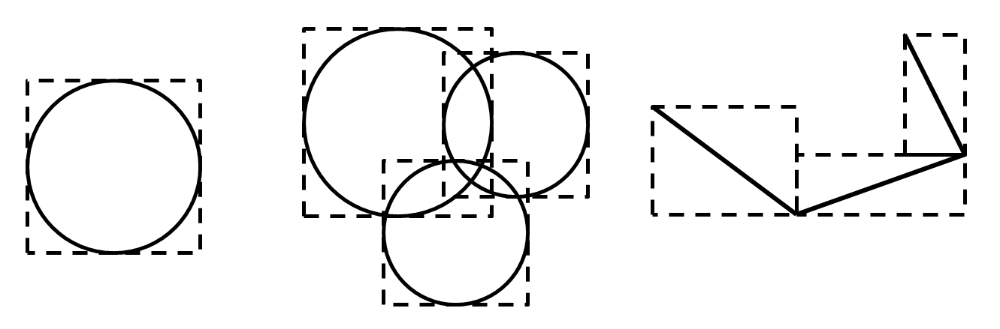
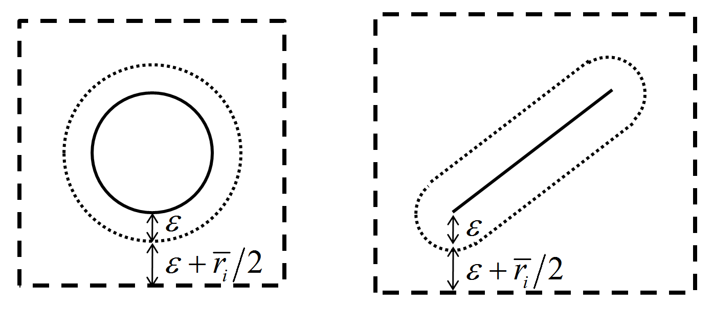
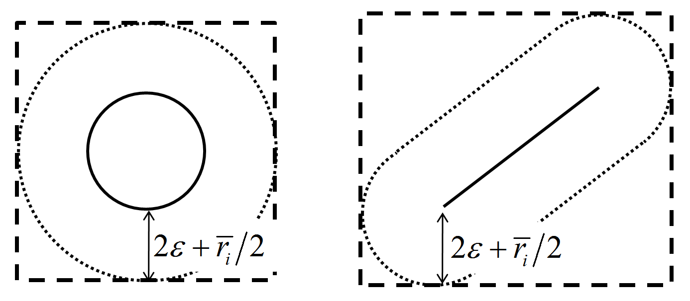
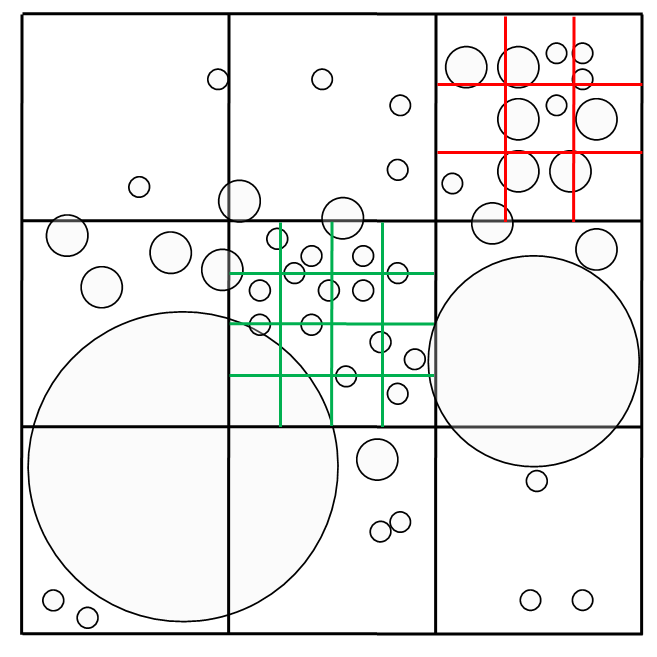
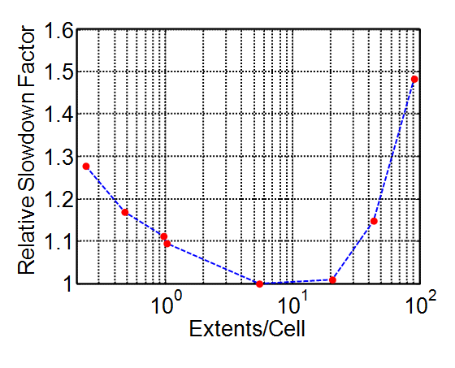

30.0 - 更新空间搜索数据结构
引入模型 域（domain） 是为了简化空间搜索，并简化 一些常用的模拟任务。域是一个与全局坐标系对齐的长方体， 所有 PFC 模型组成部分都位于其中。为进行邻近检测，域被分解为尺寸相同的长方体， 即单元，每个单元保存与其在某种意义上重叠的部件（piece）列表。 所得的数据结构称为 单元空间（cell space）。此类数据结构 可以显著降低圈定空间中某一区域对象的计算开销，因为 只需查询感兴趣区域内的单元。使用单元空间时，可以在与对象数量成正比的时间内 确定所有对象的空间邻近性。相比之下， 两两测试各对象之间的邻近性所需时间与对象数量的平方成正比， 这在计算上是非常繁重的负担。由于 在循环计算过程中根据部件的邻近性创建/删除接触，接触检测这一操作 在很大程度上依赖于高效的单元空间实现。
在此循环点中，所有保存部件的单元空间数据结构都会被验证，以便 在下一个循环点中完成 接触检测（contact detection）。 为进行空间搜索，每个部件都通过一组称为范围的轴对齐包围盒来抽象表示。 范围用于加速确定部件可能与哪些单元重叠的过程。 在详细介绍单元空间实现之前，下面先对部件范围这一概念做进一步 说明。
部件范围
部件的最小范围是完全包围该部件的最小轴对齐包围盒， 如下所示。


图 1：球颗粒（左）、刚性团簇中的子颗粒（中）以及墙的面片（右）的最小范围。
如果仅根据最小范围就将部件映射到单元中，则无法保证在部件之间可能产生力的循环之前 创建接触。这会带来问题，因为单个循环内可能存在很大的力，从而导致模型不稳定。在 PFC 中， 通过使用放大的范围将部件映射到单元空间，并限制循环过程中部件的平移， 可以保证在力产生的循环之前创建接触。只要自动或缩放时步确定模式处于激活状态， 这一保证就成立。有关这些模式的更多信息，请参阅“时步确定（Timestep Determination）”一节； 有关部件运动学约束的详细描述，请参阅此（this）小节。此保证在“接触更新（Contact Update）”一节中进一步阐述。
最小范围在每个方向上都会按可由用户指定的接触检测容差系数
\(\varepsilon\) 放大（参见 ball tolerance、
clump tolerance、rblock tolerance 和 wall tolerance 命令）。此容差在将部件
映射到单元空间时计算，其表达式为：
式中，\(\left | \mathbf{v} \right |\) 为部件平动速度的大小， \(\Delta t\) 为当前时步，\(E_p\) 为部件尺寸的一种度量。\(E_p\) 是 球颗粒或子颗粒的直径；对于面片，\(E_p\) 是最小范围各边的平均长度。 \(\varepsilon_v\) 由 velocity 关键字设置，\(\varepsilon_e\) 由 extent 关键字设置，\(\varepsilon_c\) 由 constant 关键字设置。
部件根据其单元范围映射到单元空间中，如下
图所示。部件移动时会被重新映射到单元空间（即，从先前映射到的单元中
移除，并映射到相应的单元中）。每当部件从上次映射到单元空间时的位置
沿任一方向累计移动超过 \(\varepsilon\) 时，就会触发重新映射。
对于子颗粒和面片，必须考虑累计运动，包括绕刚性团簇质心或墙转动中心的旋转。
最大相互作用距离 \(\overline{r}_i\) 由 proximity 关键字在
cmat add、cmat default 或 cmat modify 命令中指定。这样便可增大单元范围，
用 PFC 模拟一定距离上的相互作用，使相距较远的部件也能被检测为
彼此邻近。所有部件均采用 接触模型分配表（CMAT）（Contact Model Assignment Table (CMAT)） 中指定的
最大相互作用距离。


图 2：球颗粒/子颗粒与面片的单元范围。\(\varepsilon\) 为容差， \(\overline{r}_i\) 为最大相互作用距离。
当部件的范围被放大时，其单元范围可能重叠许多超出高效空间邻近检测所需的单元。 如“接触更新（Contact Update）”一节所述，对于需要更新的部件（dirty piece）， 理想情况下应在其周围 \(2 \varepsilon + \frac{\overline{r}_i}{2}\) 的距离范围内搜索可能产生的接触。为避免将部件映射到该距离之外的 单元中，采用了共形面检查。可以将共形面理解为由距部件表面 \(2 \varepsilon + \frac{\overline{r}_i}{2}\) 处的所有点 构成的面，如下所示。因此，部件被映射到其共形面所重叠的单元中， 这些单元是其单元范围所重叠单元的子集。


图 3：球颗粒/子颗粒与面片的共形面。\(\varepsilon\) 为容差， \(\overline{r}_i\) 为最大相互作用距离。
单元空间
在指定模型域尺寸之后，空间会被细分为 \(N\) 个等尺寸的 父单元，每个父单元的边长为 \(len\)。默认情况下共有 {二维 1,000 个；三维 10,000 个} 个父 单元。父单元列表保存在一个长度为 \(N\) 的一维数组中。每个父单元 都保存着一个对象列表，其中的对象被映射到该单元中。当部件最初生成时，会计算它们的 单元范围，并将它们视为 dirty。PFC 采用与 [Yao2004] 方法类似的做法：部件在创建时即为 dirty，若需要重新映射，则在循环过程中也为 dirty。 程序会构建一个 dirty 列表，使得在这个循环点上只对需要重新映射的部件 进行操作。这种局部重新映射方案在黏结颗粒 模拟中极具优势，因为在这类模拟中任一给定循环内需要重新映射的部件都很少。[Yao2004] 还证明， 对于分子动力学模拟而言，局部重新映射可以比全局重新映射 更加高效。因此，支撑空间搜索的底层数据结构必须 能够在局部层面上方便地修改，以便利用局部重新映射的优势。
通过将部件单元范围在各维度上的上界和下界取整，可以确定 该部件可能被映射到哪些父单元中。
其中，向量 \(\mathbf N\) 包含各维度上的单元数目，向量 \(\mathbf {cextent}_{\rm lb}\) 包含单元范围的下界，向量 \(\mathbf {cextent}_{\rm ub}\) 包含单元范围的上界，向量 \(\mathbf x_0\) 为 单元空间的原点，而向量 \(\mathbf {ind}_{\rm lb}\) 和 \(\mathbf {ind}_{\rm ub}\) 分别是 各维度上单元的下标下限和上限。\(\lfloor \rfloor\) 运算符为向下取整函数。给定向量的整数下标 \(\mathbf {ind}\)，若它在每个维度上介于 \(\mathbf {ind}_{\rm lb}\) 和 \(\mathbf {ind}_{\rm ub}\) 之间，则 相应父单元在一维数组中的下标即可计算得到
其中在二维情况下 \(\mathbf {ind}_{\rm z} = 0\)，下标表示向量的各分量。
除了每个单元所保存的部件列表之外，每个部件还保存着它被映射到的所有单元的列表。 当部件被映射到父单元中时，程序会统计范围形心 落在各单元内的部件数目，同时统计它们的范围尺寸，即范围的 {二维为面积；三维为体积}。到目前为止所述的方法是一种链接单元算法。为了 辅助空间搜索，程序实现了迭代器数据结构，使用户可以简单而 高效地检查搜索窗口邻近区域内的所有部件。
当映射到单个单元中的部件范围形心数目超过指定数量时，程序会执行 检查，以确定该单元是否应当细化。单元细化是指 将一个父单元划分为若干等尺寸的子单元。细化之后，父单元不再 提供对已映射部件的访问，而是包含一个独立的、内嵌的单元空间。 经过细化的单元空间具有与父单元范围尺寸相同的空间尺寸，并包含一个 保存映射到其各单元中的部件列表的一维数组，以及迭代能力。 细化策略的目标是在局部调整单元尺寸，以自动、动态地适应 部件范围尺寸的非均匀变化。其目标是无需用户调参即可 在广泛的问题范围内获得接近最优的搜索性能。若父单元尺寸 超过范围形心映射到该父单元的部件范围平均尺寸的指定倍数，则 表明应当进行细化。这一检验可避免对与 大范围部件重叠的小单元进行细化。父单元会被划分为 若干等尺寸单元，以匹配每个单元的目标部件范围数目。


图 4：父单元在局部被细化为子单元，以匹配单元中对象的目标数目。
随着循环计算的继续，部件分布可能发生变化，从而使得已细化的单元空间不再 有效。例如，小部件可能在粗基质中迁移，流体流动可能局部改变部件的 尺寸分布，或者原先被占据的空间区域中仅剩少量部件。 程序会检查细化单元，以确保仍有范围形心映射到这些单元中，并且 所映射范围的平均尺寸与细化准则保持一致。若违反 其中任一条件，则表明应删除该细化单元空间，并将剩余 部件放入父单元中。通过这种方式，空间细分可以随着 模型演化而动态重新生成。
[Mio2007] 展示了一种替代的链接单元（linked-cell）实现，当每个单元映射的对象数量约为 1 至 5 时性能最优。下图 给出了上述未经细化的 PFC 空间搜索实现的相对性能；这些结果用于指导单元细化算法。在 立方体区域中生成约 11,000 个三维均匀球颗粒，使其互不重叠（通过 100,000 次尝试生成）。随后将这些 球颗粒放大 1.5 倍。关闭重力，为球颗粒施加初始速度，并对模型计算 250 个循环。各方向上的 范围按球颗粒半径的 25% 扩大。模型域的设置使约 120,000 个球颗粒范围能够在模型域内 无重叠地容纳。所报告的相对减速因子基于循环期间累加的重新映射时间与接触检测时间。 这一性能度量称为检测时间，其中报告值始终取两次运行的平均值。 最优方案的相对减速因子为 1，而较大的值意味着更长的检测时间。显然，每个单元 5-20 个 部件范围（piece extent）是最优的，在该范围内性能敏感性很小。


图 5：结果显示，对于链接单元实现，检测（即重新映射加上接触检测）的相对性能与 单个单元内可无重叠容纳的部件范围数量之间的关系。
根据上述模拟结果，每个单元的目标对象数量固定为 10。一旦检测到某个单元内质心落在其中的部件超过 10 个，便对该单元进行 细化测试。一旦映射到某个单元中的部件少于 2 个，且该单元为子单元，则该单元被取消细化。 这一过程通过一种称为惰性列表（lazy list）的无等待（wait-free）列表数据结构在多个线程上实现，该结构类似于 [Heller2005]。
– 下一循环点：创建/删除接触（Next Cycle Point: Create/delete Contacts） –
参考文献
| [Heller2005] | Heller, S., M. Herlihy, V. Luchangco, M. Moir, B. Scherer, and N. Shavit, “一种惰性并发基于列表的集合算法”（A lazy concurrent list-based set algorithm）， 载于第 9 届分布式系统原理国际会议（OPODIS），2005 年 12 月（2005）。 |
| [Mio2007] | Mio, H., A. Shimosaka, Y. Shirakawa and J. Hidaka, “离散元算法中用于快速接触检测的单元优化”（Cell optimization for fast contact detection in the discrete element algorithm）， Advanced Powder Technology, 18 (4), 441-453 (2007). |
| [Yao2004] | (1, 2) Yao, Z., J. Wang, G. Liu and M. Cheng, “利用单元分解与数据排序方法改进分子模拟中的邻接表算法”（Improved neighbor list algorithm in molecular simulations using cell decomposition and data sorting method）， Computer Physics Communications, 161, 27-35 (2004). |
| 这些内容对您有帮助吗？… | FLAC3D © 2019, Itasca | 原文更新于 2020 年 10 月 8 日 |